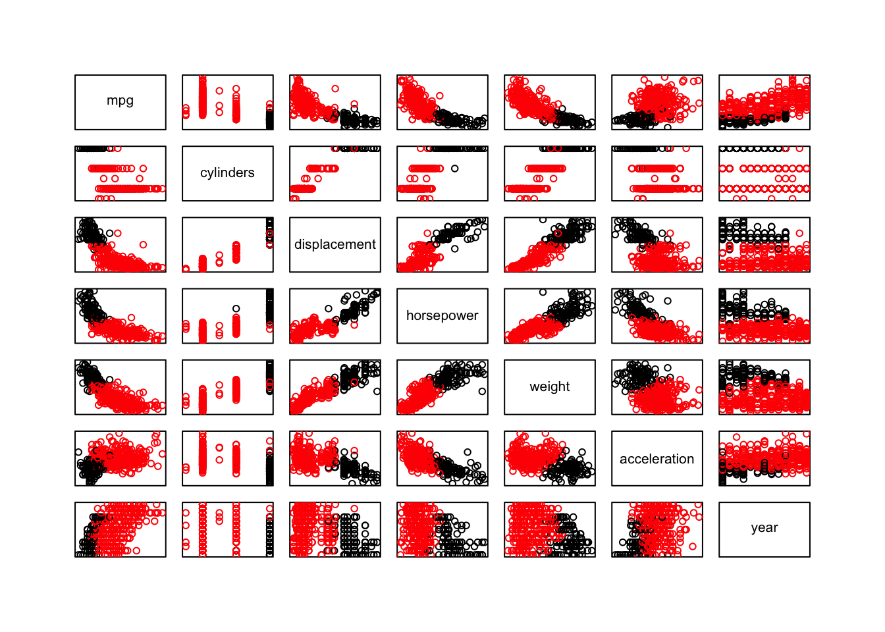
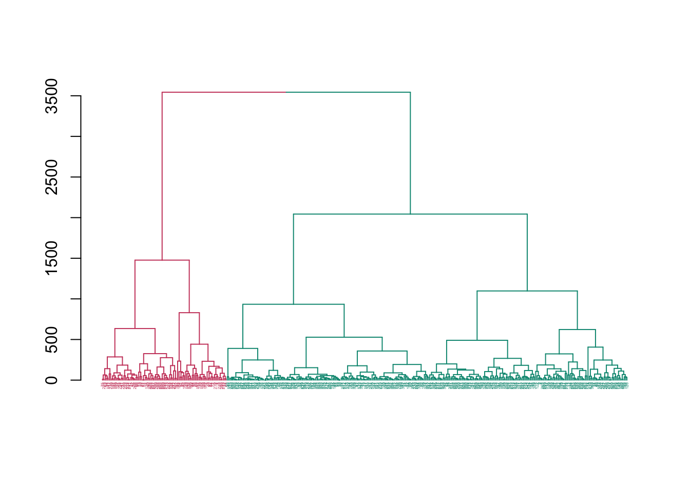

Chapter 8 Clustering
The goal of clustering is to discover groups of similar observations among a set of variables \(X_1,\dotsc,X_p\). Clustering is an example of an unsupervised learning method, as we only consider the features \(X_1,\dotsc,X_p\) without an associated response \(Y\).
To illustrate clustering methods, we will use the Auto data in the ISLR R library. The data set contains information on the gas mileage, number of cylinders, displacement, horsepower, weight, acceleration, year, and origin for 392 vehicles.
## The following object is masked from package:ggplot2:
##
## mpg| mpg | cylinders | displacement | horsepower | weight | acceleration | year | origin | name |
|---|---|---|---|---|---|---|---|---|
| 18 | 8 | 307 | 130 | 3504 | 12.0 | 70 | 1 | chevrolet chevelle malibu |
| 15 | 8 | 350 | 165 | 3693 | 11.5 | 70 | 1 | buick skylark 320 |
| 18 | 8 | 318 | 150 | 3436 | 11.0 | 70 | 1 | plymouth satellite |
| 16 | 8 | 304 | 150 | 3433 | 12.0 | 70 | 1 | amc rebel sst |
| 17 | 8 | 302 | 140 | 3449 | 10.5 | 70 | 1 | ford torino |
| 15 | 8 | 429 | 198 | 4341 | 10.0 | 70 | 1 | ford galaxie 500 |
8.1 \(k\)-Means
The \(k\)-means clustering algorithm uses the variables \(X_1,\dotsc,X_p\) to partition our observations \(1,\dotsc,n\) into \(k\) non-overlapping groups. The partitioning is done based on the similarity of observations, where similarity is measured using Euclidean distance. Consequently, we will need to rescale our data.
We’ll isolate the first seven variables (mpg, cylinders, displacement, horsepower, weight, acceleration, year) and define them as \(X\).
# select first seven columns of Auto data
X = Auto[,1:7]
# rescale X's
stdX = scale(X)
# set the name of each row to be the car name stored in the Auto data
rownames(stdX) = Auto$name
# summarize the rescaled data
summary(stdX)## mpg cylinders displacement horsepower
## Min. :-1.8509 Min. :-1.449 Min. :-1.208 Min. :-1.519
## 1st Qu.:-0.8259 1st Qu.:-0.863 1st Qu.:-0.854 1st Qu.:-0.766
## Median :-0.0892 Median :-0.863 Median :-0.415 Median :-0.285
## Mean : 0.0000 Mean : 0.000 Mean : 0.000 Mean : 0.000
## 3rd Qu.: 0.7116 3rd Qu.: 1.482 3rd Qu.: 0.777 3rd Qu.: 0.559
## Max. : 2.9666 Max. : 1.482 Max. : 2.490 Max. : 3.261
## weight acceleration year
## Min. :-1.607 Min. :-2.733 Min. :-1.6232
## 1st Qu.:-0.886 1st Qu.:-0.640 1st Qu.:-0.8089
## Median :-0.205 Median :-0.015 Median : 0.0055
## Mean : 0.000 Mean : 0.000 Mean : 0.0000
## 3rd Qu.: 0.750 3rd Qu.: 0.538 3rd Qu.: 0.8199
## Max. : 2.546 Max. : 3.356 Max. : 1.6343Let’s start by runing the \(k\)-means algorithm with \(k=2\) and only using the mpg and horsepower variables.
# estimate clusters
km2 = kmeans(stdX[,c(1,4)],2)
# plot clusters
plot(mpg, horsepower, col=km2$cluster)
We can see how the algorithm divides the observations into two groups: the red observations have a high mpg but lower horsepower, while the black observations have a low mpg but high horsepower.
Now let’s try using all seven variables to define the clusters.
# estimate clusters
km2 = kmeans(stdX,2)
# plot clusters pver mpg and horsepower
plot(mpg, horsepower, col=km2$cluster)
The plot looks similar: even when we use all variables, the first group of cars (black observations) have a low mpg and high horsepower while the second group (red observations) have a high mpg and low horsepower.
The plot above only shows the clustering solution with respect to two variables (mpg and horsepower). To examine how the clusters are defined over all variables, we can use the pairs( ) function.

Lastly, we can explore clustering solutions for different values of \(k\). For simplicity, we will only examine the clusters for the mpg and horsepower variables.
# estimate clusters
km3 = kmeans(stdX,3)
km4 = kmeans(stdX,4)
km5 = kmeans(stdX,5)
# plot clusters over mpg and horsepower
par(mfrow=c(2,2), mar=c(4.1,4.1,2.1,2.1))
plot(mpg, horsepower, col=km2$cluster)
plot(mpg, horsepower, col=km3$cluster)
plot(mpg, horsepower, col=km4$cluster)
plot(mpg, horsepower, col=km5$cluster)
As \(k\) increases, we get a more granular picture of car segments. However, the problem of interpretation becomes more difficult: What is it that actually differentiates these clusters from each other? We are only plotting the data over two variables, but the other variables also contribute in the determination of cluster assignments.
Moreover, how should we determine an appropriate value of \(k\)? Hierachical clustering provides a partial solution.
8.2 Hierarchical Clustering
Hierarchical clustering addresses the issue of having to choose the number of clusters \(k\), and instead considers a sequence of clusters from \(k = 1,\dotsc,n\). We’ll use the hclust( ) function and dendextend package to fit and plot the output from hierarchical clustering models.
# estimate clusters
hc = hclust(dist(X))
# plot clusters
dend = as.dendrogram(hc)
labels_cex(dend) = .25
plot(dend)
Because we have a few hundred observations, the plot – which called a “dendrogram” – becomes difficult to read and interpret on a small scale (meaning we would need a much larger plotting window!).
Suppose we were interested in a two group clustering solution. Then we can simply color the dendrogram based on the first split.
dend = as.dendrogram(hc)
dend = color_labels(dend,k=2)
dend = color_branches(dend,k=2)
labels_cex(dend) = .25
plot(dend)
We can do the same for a larger number of groups, too.
dend = as.dendrogram(hc)
dend = color_labels(dend,k=10)
dend = color_branches(dend,k=10)
labels_cex(dend) = .25
plot(dend)
Notice that when interpreting a dendrogram, the analyst must still “choose” \(k\), so the problem still hasn’t really gone away. The only benefit with hierarchical clustering methods is that the analyst can quickly and easily examine the landscape of clustering solutions to understand how the value of \(k\) impacts different clustering solutions.